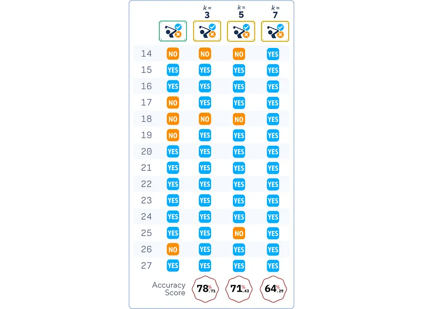

Imagine a method that makes predictions by looking at the most similar examples it has seen before. This is the essence of the Nearest Neighbor Classifier — a simple yet intuitive algorithm that brings a touch of real-world logic to machine learning.
While the dummy classifier sets the bare minimum performance standard, the Nearest Neighbor approach mimics how we often make decisions in daily life: by recalling similar past experiences. It’s like asking your neighbors how they dressed for today’s weather to decide what you should wear. In the realm of data science, this classifier examines the closest data points to make its predictions.
A K Nearest Neighbor classifier is a machine learning model that makes predictions based on the majority class of the K nearest data points in the feature space. The KNN algorithm assumes that similar things exist in close proximity, making it intuitive and easy to understand.
Throughout this article, we’ll use this simple artificial golf dataset (inspired by [1]) as an example. This dataset predicts whether a person will play golf based on weather conditions. It includes features like outlook, temperature, humidity, and wind, with the target variable being whether to play golf or not.
Columns: ‘Outlook’, ‘Temperature’, ‘Humidity’, ‘Wind’ and ‘Play’ (target feature)
# Import libraries
from sklearn.model_selection import train_test_split
from sklearn.metrics import accuracy_score
import pandas as pd
import numpy as np
# Make the dataset
dataset_dict = {
'Outlook': ['sunny', 'sunny', 'overcast', 'rainy', 'rainy', 'rainy', 'overcast', 'sunny', 'sunny', 'rainy', 'sunny', 'overcast', 'overcast', 'rainy', 'sunny', 'overcast', 'rainy', 'sunny', 'sunny', 'rainy', 'overcast', 'rainy', 'sunny', 'overcast', 'sunny', 'overcast', 'rainy', 'overcast'],
'Temperature': [85.0, 80.0, 83.0, 70.0, 68.0, 65.0, 64.0, 72.0, 69.0, 75.0, 75.0, 72.0, 81.0, 71.0, 81.0, 74.0, 76.0, 78.0, 82.0, 67.0, 85.0, 73.0, 88.0, 77.0, 79.0, 80.0, 66.0, 84.0],
'Humidity': [85.0, 90.0, 78.0, 96.0, 80.0, 70.0, 65.0, 95.0, 70.0, 80.0, 70.0, 90.0, 75.0, 80.0, 88.0, 92.0, 85.0, 75.0, 92.0, 90.0, 85.0, 88.0, 65.0, 70.0, 60.0, 95.0, 70.0, 78.0],
'Wind': [False, True, False, False, False, True, True, False, False, False, True, True, False, True, True, False, False, True, False, True, True, False, True, False, False, True, False, False],
'Play': ['No', 'No', 'Yes', 'Yes', 'Yes', 'No', 'Yes', 'No', 'Yes', 'Yes', 'Yes', 'Yes', 'Yes', 'No', 'No', 'Yes', 'Yes', 'No', 'No', 'No', 'Yes', 'Yes', 'Yes', 'Yes', 'Yes', 'Yes', 'No', 'Yes']
}
original_df = pd.DataFrame(dataset_dict)
print(original_df)
KNN algorithm requires the data to be scaled first. Convert categorical columns into 0 & 1 and also scale the numerical features so that no single feature dominates the distance metric.
The categorical columns (Outlook & Windy) are encoded using one-hot encoding while the numerical columns are scaled using standard scaling (z-normalization). The process is done separately for training and test set.
from sklearn.model_selection import train_test_split from sklearn.preprocessing import StandardScaler # Preprocess data df = pd.get_dummies(original_df, columns=['Outlook'], prefix='', prefix_sep='', dtype=int) df['Wind'] = df['Wind'].astype(int) df['Play'] = (df['Play'] == 'Yes').astype(int) df = df[['sunny','rainy','overcast','Temperature','Humidity','Wind','Play']] # Split data and standardize features X, y = df.drop(columns='Play'), df['Play'] X_train, X_test, y_train, y_test = train_test_split(X, y, train_size=0.5, shuffle=False) scaler = StandardScaler() float_cols = X_train.select_dtypes(include=['float64']).columns X_train[float_cols] = scaler.fit_transform(X_train[float_cols]) X_test[float_cols] = scaler.transform(X_test[float_cols]) # Print results print(pd.concat([X_train, y_train], axis=1).round(2), '\n') print(pd.concat([X_test, y_test], axis=1).round(2), '\n')
The KNN classifier operates by finding the K nearest neighbors to a new data point and then voting on the most common class among these neighbors. Here’s how it works:
For our golf dataset, a KNN classifier might look at the 5 most similar weather conditions in the past to predict whether someone will play golf today.
Unlike many other algorithms, KNN doesn’t have a distinct training phase. Instead, it memorizes the entire training dataset. Here’s the process:
1. Choose a value for K (the number of neighbors to consider).
In 2D setting, it is like finding the majority of the closest colors.
from sklearn.neighbors import KNeighborsClassifier
# Select the Number of Neighbors ('k')
k = 5
2. Select a distance metric (i.e., Euclidean distance, Manhattan distance).
The most common distance metric is Euclidean Distance. This is just like finding the straight line distance between two points in real world.
import numpy as np # Choose a Distance Metric distance_metric = 'euclidean' # Trying to calculate distance between ID 0 and ID 1 print(np.linalg.norm(X_train.loc[0].values - X_train.loc[1].values))
3. Store/Memorize all the training data points and their corresponding labels.
# Initialize the k-NN Classifier knn_clf = KNeighborsClassifier(n_neighbors=k, metric=distance_metric) # "Train" the kNN (although no real training happens) knn_clf.fit(X_train, y_train)
Once the Nearest Neighbor Classifier has been “trained” (i.e., the training data has been stored), here’s how it makes predictions for new instances:
1) Distance Calculation: For the new instance, calculate its distance from all stored training instances using the chosen distance metric.
For ID 14, we calculate the distance to each member of the training set (ID 0 — ID 13).
from scipy.spatial import distance
# Compute the distances from the first row of X_test to all rows in X_train
distances = distance.cdist(X_test.iloc[0:1], X_train, metric='euclidean')
# Create a DataFrame to display the distances
distance_df = pd.DataFrame({
'Train_ID': X_train.index,
'Distance': distances[0].round(2),
'Label': y_train
}).set_index('Train_ID')
print(distance_df.sort_values(by='Distance'))
2) Neighbor Selection and Prediction: Identify the K nearest neighbors based on the calculated distances, then assign the most common class among these neighbors as the predicted class for the new instance.
After calculating its distance to all stored data points and sorting from lowest to highest, we identify the 5 nearest neighbors (top 5). If the majority (3 or more) of these neighbors are labeled “NO”, we predict “NO” for ID 14.
# Use the k-NN Classifier to make predictions
y_pred = knn_clf.predict(X_test)
print("Label :",list(y_test))
print("Prediction:",list(y_pred))
With this simple model, we manage to get good enough accuracy, much better than guessing randomly!
from sklearn.metrics import accuracy_score
# Evaluation Phase
accuracy = accuracy_score(y_test, y_pred)
print(f'Accuracy: {accuracy.round(4)*100}%')
While KNN is conceptually simple, it does have a few important parameters:
1) K: The number of neighbors to consider. A smaller K can lead to noise-sensitive results, while a larger K may smooth out the decision boundary.
The higher the value of k, the more likely that it will select the majority class (”YES”).
labels, predictions, accuracies = list(y_test), [], []
k_list = [3, 5, 7]
for k in k_list:
knn_clf = KNeighborsClassifier(n_neighbors=k)
knn_clf.fit(X_train, y_train)
y_pred = knn_clf.predict(X_test)
predictions.append(list(y_pred))
accuracies.append(accuracy_score(y_test, y_pred).round(4)*100)
df_predictions = pd.DataFrame({'Label': labels})
for k, pred in zip(k_list, predictions):
df_predictions[f'k = {k}'] = pred
df_accuracies = pd.DataFrame({'Accuracy ': accuracies}, index=[f'k = {k}' for k in k_list]).T
print(df_predictions)
print(df_accuracies)
2) Distance Metric: This determines how similarity between points is calculated. Common options include:
3) Weight Function: This decides how to weight the contribution of each neighbor. Options include:
Like any algorithm in machine learning, KNN has its strengths and limitations.
The K-Nearest Neighbors (KNN) classifier stands out as a fundamental algorithm in machine learning, offering an intuitive and effective approach to classification tasks. Its simplicity makes it an ideal starting point for beginners, while its versatility ensures its value for experienced data scientists. KNN’s power lies in its ability to make predictions based on the proximity of data points, without requiring complex training processes.
However, it’s crucial to remember that KNN is just one tool in the vast machine learning toolkit. As you progress in your data science journey, use KNN as a stepping stone to understand more complex algorithms, always considering your specific data characteristics and problem requirements when choosing a model. By mastering KNN, you’ll gain valuable insights into classification techniques, setting a strong foundation for tackling more advanced machine learning challenges.
# Import libraries
import pandas as pd
from sklearn.neighbors import KNeighborsClassifier
from sklearn.model_selection import train_test_split
from sklearn.preprocessing import StandardScaler
from sklearn.metrics import accuracy_score
# Load data
dataset_dict = {
'Outlook': ['sunny', 'sunny', 'overcast', 'rainy', 'rainy', 'rainy', 'overcast', 'sunny', 'sunny', 'rainy', 'sunny', 'overcast', 'overcast', 'rainy', 'sunny', 'overcast', 'rainy', 'sunny', 'sunny', 'rainy', 'overcast', 'rainy', 'sunny', 'overcast', 'sunny', 'overcast', 'rainy', 'overcast'],
'Temperature': [85.0, 80.0, 83.0, 70.0, 68.0, 65.0, 64.0, 72.0, 69.0, 75.0, 75.0, 72.0, 81.0, 71.0, 81.0, 74.0, 76.0, 78.0, 82.0, 67.0, 85.0, 73.0, 88.0, 77.0, 79.0, 80.0, 66.0, 84.0],
'Humidity': [85.0, 90.0, 78.0, 96.0, 80.0, 70.0, 65.0, 95.0, 70.0, 80.0, 70.0, 90.0, 75.0, 80.0, 88.0, 92.0, 85.0, 75.0, 92.0, 90.0, 85.0, 88.0, 65.0, 70.0, 60.0, 95.0, 70.0, 78.0],
'Wind': [False, True, False, False, False, True, True, False, False, False, True, True, False, True, True, False, False, True, False, True, True, False, True, False, False, True, False, False],
'Play': ['No', 'No', 'Yes', 'Yes', 'Yes', 'No', 'Yes', 'No', 'Yes', 'Yes', 'Yes', 'Yes', 'Yes', 'No', 'No', 'Yes', 'Yes', 'No', 'No', 'No', 'Yes', 'Yes', 'Yes', 'Yes', 'Yes', 'Yes', 'No', 'Yes']
}
df = pd.DataFrame(dataset_dict)
# Preprocess data
df = pd.get_dummies(df, columns=['Outlook'], prefix='', prefix_sep='', dtype=int)
df['Wind'] = df['Wind'].astype(int)
df['Play'] = (df['Play'] == 'Yes').astype(int)
# Split data
X, y = df.drop(columns='Play'), df['Play']
X_train, X_test, y_train, y_test = train_test_split(X, y, train_size=0.5, shuffle=False)
# Standardize features
scaler = StandardScaler()
float_cols = X_train.select_dtypes(include=['float64']).columns
X_train[float_cols] = scaler.fit_transform(X_train[float_cols])
X_test[float_cols] = scaler.transform(X_test[float_cols])
# Train model
knn_clf = KNeighborsClassifier(n_neighbors=3, metric='euclidean')
knn_clf.fit(X_train, y_train)
# Predict and evaluate
y_pred = knn_clf.predict(X_test)
print(f"Accuracy: {accuracy_score(y_test, y_pred)}")
Next